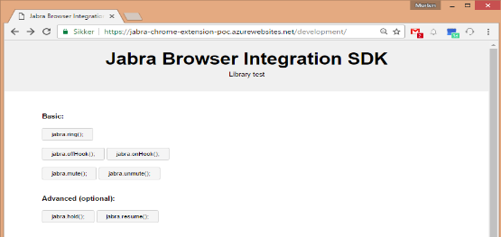

Jabra Browser SDK
Call control from within a browser

Documentation
JabraBrowserIntegration.pdf
Development tools
Library test
- testpage to try out the library (jabra.browser.integration-0.2.js)
WebRTC softphone demo
supports mute/unmute/end-call from a Jabra device
Miscellaneous
jabra.browser.integration-0.2.js
Chrome Web Extension
Downloads
- Windows and macOS